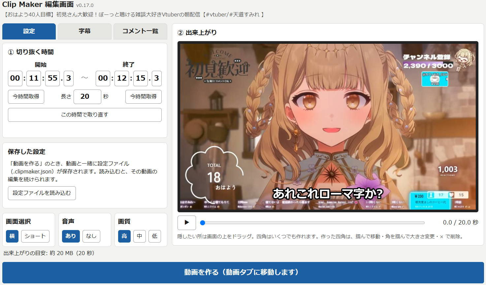
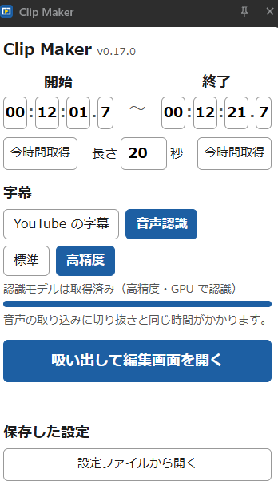
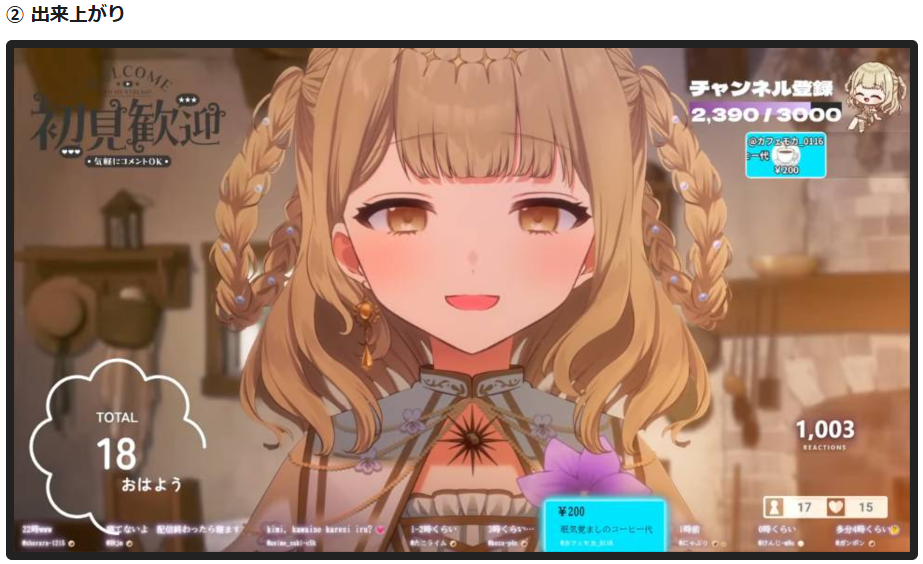
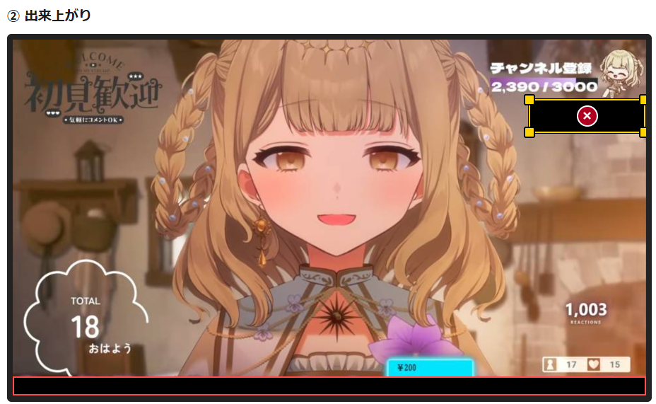

Clip Maker — YouTube 切り抜き

YouTube の 1 場面（最長 60 秒）を、切り抜きできるツールです。
横動画・short 対応、字幕・コメント・隠ぺい窓の ON/OFF 機能付き。
拡張機能の導入方法
- zip をダウンロードして展開する
- Chrome で
chrome://extensionsを開き、右上の「デベロッパーモード」を ON にする - 「パッケージ化されていない拡張機能を読み込む」で、展開した中の
extensionフォルダを選ぶ
更新するときは、同じ zip をもう一度ダウンロードして展開し、chrome://extensions の更新ボタンを押してください。Chrome の起動時に「デベロッパーモードの拡張機能を無効にしますか」と出ることがあります。「キャンセル」で使い続けられます。
使い方

- YouTube の動画ページで拡張機能アイコン → Clip Maker 選択
- 左画像のパネルが横に開くので、切り抜きたい開始時間で停止して「今時間取得」を押すと時間を取得する
- 「吸い出して編集画面を開く」で録画開始
- 録画後に編集画面が開く
- 編集画面の「設定」「字幕」「コメント一覧」で一通りの切り抜き用設定が可能
- 設定後、「動画を作る（動画タブに移動します）」で切り抜き動画完成版の録画を実行する
隠ぺい窓


出来上がり内のプレビュー画面をドラッグすると、隠ぺい窓を追加できる
注意事項
- 切り抜き時間分再生しながら録画を行います。録画中は YouTube のタブを表示したままにしてください。
- 音声認識は初回のみ認識モデル（数百 MB）のダウンロードを行います。このため、音声認識の字幕生成は編集画面表示してから DL 時間 + モデルによる認識時間（数分）後に反映されます。
- 切り抜き動画を作成する際は事前に元動画の権利者の許諾をいただいてください。ご利用はご自身の責任でお願いいたします。
- 基本的には個人配信者・小規模な企業配信者を対象とした切り抜きへの使用を想定しています。ニュースターやアップアンドカミングな配信者向けであり、中堅やベテラン配信者対象の切り抜き・企業様のご利用はお控えいただきますと助かります。
謝辞
- 本ツールの説明に天道すみれ様（X: https://x.com/tendou_sumire YouTube: https://www.youtube.com/@tendousumire）の動画を使用させていただきました。大変ありがとうございます。
- 動画元: https://www.youtube.com/watch?v=b8q7lurQsYo